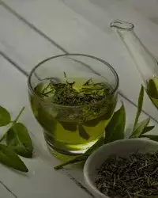
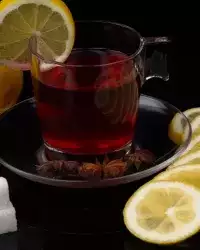
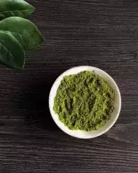
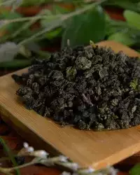
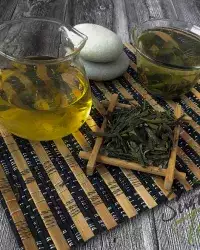
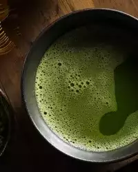

Зеленый чай
Зеленый и черный чай получают с одного чайного куста. Различия начинают проявляться на стадии изготовления. Зеленый чай подвергается гораздо меньшей ферментации. Родина напитка — Китай. Оттуда он распространился в страны Юго-Восточного региона и Азии: Японию, Корею, на Ближний Восток. И только в начале XX века его узнали и полюбили на западе..Существует очень много сортов зеленого чая. Они заметно отличаются вкусом и свойствами. Это обусловлено различными условиями произрастания и технологией обработки. Лучший зеленый чай выращивают в Китае и Японии. Самые известные: «Серебряные иглы», «Колодец дракона», «Драконовы горы», «Зелёные вершины», «Царь обезьян», «Сэнтя», «Гуритя». Вообще имеется по меньшей мере 40 достаточно известных сортов в Китае, около 20 регулярно упоминаемых в Японии, до 10 корейских, один индийский, а также менее знаменитые зеленые чаи из Цейлона, Вьетнама, Индонезии, Грузии и Краснодарского края. Надо понимать что кроме популярных, есть множество неизвестных сортов и их комбинаций. Полный список всех видов найти невозможно, его попросту нет.
Существует очень много сортов зеленого чая. Они заметно отличаются вкусом и свойствами. Это обусловлено различными условиями произрастания и технологией обработки. Лучший зеленый чай выращивают в Китае и Японии. Самые известные: «Серебряные иглы», «Колодец дракона», «Драконовы горы», «Зелёные вершины», «Царь обезьян», «Сэнтя», «Гуритя». Вообще имеется по меньшей мере 40 достаточно известных сортов в Китае, около 20 регулярно упоминаемых в Японии, до 10 корейских, один индийский, а также менее знаменитые зеленые чаи из Цейлона, Вьетнама, Индонезии, Грузии и Краснодарского края. Надо понимать что кроме популярных, есть множество неизвестных сортов и их комбинаций. Полный список всех видов найти невозможно, его попросту нет. Заваривают зеленый чай при температуре от 60 до 87 градусов. Время заваривания от 30 секунд до 3 минут. Замечено, что для приготовления высококачественных дорогих сортов требуется меньше времени и более низкая температура. При нарушении условий напиток приобретает неприятную горчинку. Состав зеленого чая удивителен. В нем содержится большое количество полезных элементов: антиоксиданты, катехины, витамины, минералы и некоторые фитохимические соединения. Подобный состав объясняет полезные свойств, которые присущи зеленому чаю. Он уменьшает вероятность развития сердечно-сосудистых заболеваний, рака, снижает давление, улучшает метаболизм и способствует общему оздоровлению организма. Зеленый чай издавна используется в традиционной индийской и китайской медицине для снижения температуры, остановки кровотечения, лечения ран, болезней сердца и мозга и многого другого. Не рекомендуется пить его людям с повышенной чувствительностью к кофеину и склонным к бессоннице. А также при обострении заболеваний ЖКТ, при приеме антикоагулянтов и стимуляторов, беременным и кормящим женщинам. Самый полезный зеленый чай — листовой. Качество определяют по внешнему виду — цвет листа должен быть равномерным, от серебристого до темно-зеленого. Небольшие порции можно заваривать до трех раз. Многие советуют пить его с лимоном, но без добавления молока.
-

Зеленый чай: влияние на организм и правила употребления
-

Чай с лимоном -самый “русский чай”
-

Экстракт зеленого чая: польза в каждом глотке
-

Молочный улун: зеленый чай из Китая со сливочным вкусом
-

Лунцзин чай или “Колодец дракона”, как заваривать
-

Интересный напиток матча; что же это?